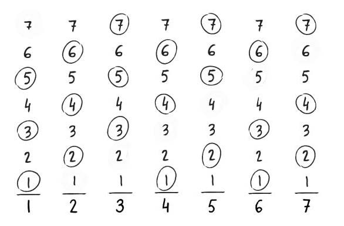
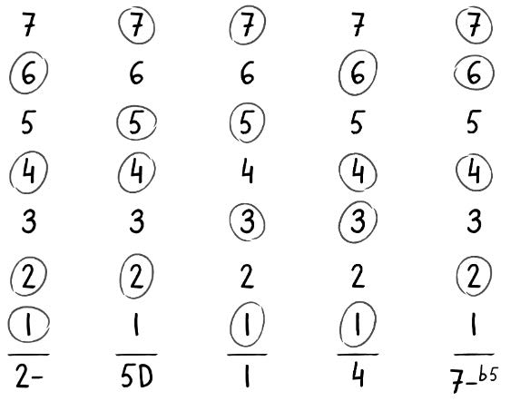

Wat zijn letterbenamingen en letterakkoorden ?
De Oude Grieken gaven hun noten al namen. Zo was de belangrijkste toonladder La mineur.
Deze toonladder volgt de witte toetsen van de piano. De laagste noot (links) op de piano(volledig
klavier) is dan ook een la. Ze gaven de opeenvolgende noten, van la tot la, de eerste letters van
het griekse alfabet. De Oude Romeinen namen dit systeem over en de letters werden dan ook
romeinse letters. Tot op de dag van vandaag gebruiken we nog steeds die letters.
la si do re mi fa sol la
A B C D E F G A
Wij gebruiken deze letters voornamelijk wanneer we akkoorden gaan noteren.
De letters komen dan overeen met de grondnoot van het akkoord.
Merk op dat we steeds hoofdletters gebruiken !
Wanneer er wijzigingstekens worden gebruikt dan zetten we die achter de letter.
A# B# C# D# ...etc.
Ab Bb Cb Db ...etc.
De Tonale Kaart (Tonal Map)

Wanneer we onze majeurtoonladder verticaal
stapelen in cijfers met onze akkoordnoten
omcirkeld kunnen we deze ladder scheiden met
een streepje onder de grondnoot te trekken
waaronder de graad t.o.v. onze toonaard
genoteerd wordt in cijfers. We kunnen de
graden verduidelijken met het type akkoord.

De Diatonische Majeur Reeks volledig:
Wat we gecreëerd hebben is een tonale
kaart. Deze tonale kaart toont ons de weg
doorheen een akkoordenschema (zie
voorbeeld hieronder). In “Sing The
Numbers” (IFR methode) verbinden we al
zingend (en uiteraard later ook spelend) de
omcirkelde noten.

Fragment uit “Autumn Leaves” (Joseph Kosma)
(Weliswaar al in vierklanken genoteerd.)